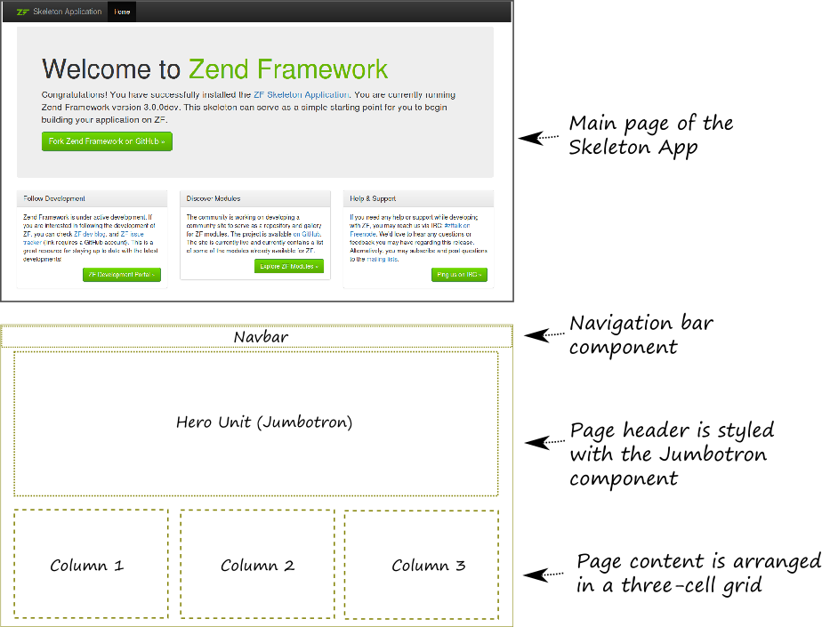

6.1. Sobre las Hojas de Estilo y Twitter Bootstrap
En un sitio web basado en ZF3 se usan las hojas de estilo CSS para definir la apariencia visual y el estilo de las páginas web. Los archivos CSS 9 se guardan generalmente en el directorio APP_DIR/public/css.
9) Si somos nuevos en el uso de CSS podemos revisar el excelente tutorial de W3Schools visitando este enlace.
Como las reglas CSS puede llegar a ser complejas y necesitar laboriosos ajustes, además, de la experiencia de un diseñador se pueden separar en un "biblioteca" (framework). Análogamente a los frameworks PHP los frameworks CSS permiten la reutilización del código.
Hoy en día existen varios frameworks CSS en el mercado y uno de ellos es Twitter Bootstrap (o simplemente Bootstrap). Originalmente fue diseñado por Twitter para unificar la apariencia de sus propias herramientas web. Con el tiempo Bootstrap se ha convertido en un framework CSS popular que permite dar a nuestro sitio web una apariencia profesional y atractivo visual incluso si no tenemos habilidades avanzadas de diseñador y sin la necesidad de crear reglas básicas CSS (aunque por supuesto podemos definir nuestras propias reglas CSS por sobre Bootstrap para personalizar la apariencia de nuestro sitio web). Bootstrap es software libre que se distribuye bajo la licencia Apache License v.2.0.
Twitter Bootstrap viene empacado con Zend Skeleton Application así que podemos usarlos luego de terminar la instalación de ZF3, apenas al sacarlo de la caja! Además, podemos descargar la versión más reciente de Bootstrap desde la página web oficial del proyecto. En el momento de escribir este libro la última versión es la número 3.x.
En general Bootstrap hace las siguientes cosas:
Provee el CSS reset que es una hoja de estilo que define los estilos para todos los posibles elementos HTML. Con esto aseguramos que el sitio web se vea de la misma manera en todos los navegadores webs.
Provee las reglas CSS básicas que definen el estilo de la tipografía (encabezado y texto), tablas, formularios, botones, imágenes, etc.
Define el grid system. El sistema de rejillas permite ordenar los elementos de nuestra página web en una estructura que se asemeja a las rejillas. Por ejemplo, revisemos la página principal de la Skeleton Application (figura 6.1), donde tendemos una estructura de rejillas que consiste en tres columnas.
Define útiles componentes para la interfaz web como menús desplegables, barras de navegación, migas de pan, paginación, etc. Por ejemplo, en la página principal de la aplicación esqueleto tenemos hay varios componentes. En la parte de arriba está la barra de navegación y debajo de ella está el encabezado (también llamado Hero Unit o Jumbotron). Estos componentes son muy útiles para cualquier sitio web.
Incluye extensiones de JavaScript que permiten que los componentes de Bootstrap sean más interactivos. Por ejemplo, JavaScript es usado para animar a los menús desplegables y para mostrar "diálogos modales" (modal dialogs).
 Figura 6.1. Página principal de la aplicación esqueleto y su diseño
Si somo nuevos nuevos en Twitter Bootstrap es recomendables que revisemos el Apéndice C. Introducción a Twitter Bootstrap, en donde podemos encontrar más información sobre el uso de Twitter Bootstrap y sus componentes.